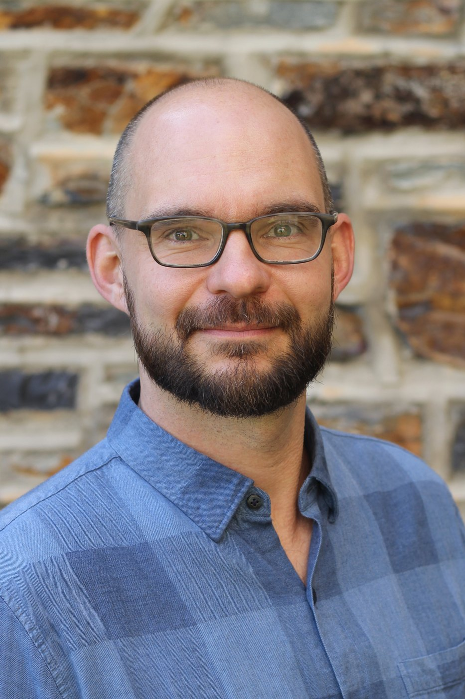

Alumni reflection · original submission
David Bradway
Technical University of Denmark (DTU)
2020 alumni reflection · 1 minute read

Background and career path
A difficult part of my training and career path and one that I am still working on developing has been the gradual shift in mindset and duties from being primarily an engineer to more of a scientist in an engineering field. My undergraduate work prepared me more for the practice of engineering, and though I had some exposure to research and development through summer fellowships and internships during my bachelor work, it was really in graduate school and the Whitaker postdoctoral scholarship where I began to shift toward science.
The international experience
I was glad to have the chance to study under the direction of a global leader in my field during my Whitaker postdoctoral scholarship. I continued a long successful collaboration between my host and home mentors who had exchanged and hosted students in the past. The lab was similar enough that I was able to learn new topics and widen my research exposure to new topics but in the same general field as I was trained.
Work and career reflections
I have continued research in the laboratory where I did my doctoral work. I have taken on more of the project management and administrative duties of assisting in the running of the laboratory, while continuing research studies and scholarly activities. I work in a strong academic program in a top department, and I am fortunate to have many brilliant colleagues with whom to work.